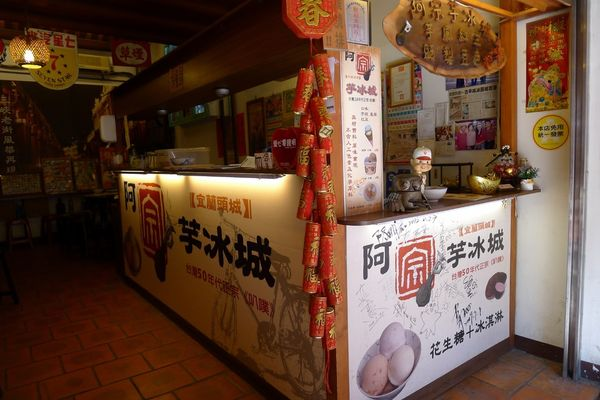

台灣有種古早賣冰淇淋的方式，就是在摩托車後面加装上小冰櫃，裡面装有幾種口味的冰淇淋（味道跟一般外售冰淇淋不太一樣，有軟绵绵的的口感），老闆會骑著摩托車到大街小巷兜售，特色就是會在機車把手上加裝手按喇叭，邊騎車邊按喇叭叫賣，喇叭會發出"吧噗~吧噗~~"的聲音，所以稱這種冰淇淋叫"吧噗"。

阿宗芋冰城
特色：五十年來堅持以傳統古法製造，不採用人工香料及化學色素，並採用芋頭、紅豆和鳳梨製作招牌的「三色冰」，具有道地懷舊的古早味
價格：★★★★✩（兩球30元）
口味：★★★★✩
衛生：★★★★✩
服務：★★★✩✩
地址： 新北市三峽區民權街132號
電話：02-26733222
營業時間：平日AM11:30-PM17:00（假日AM10:30-PM19:00）
相關連結：店家Facebook